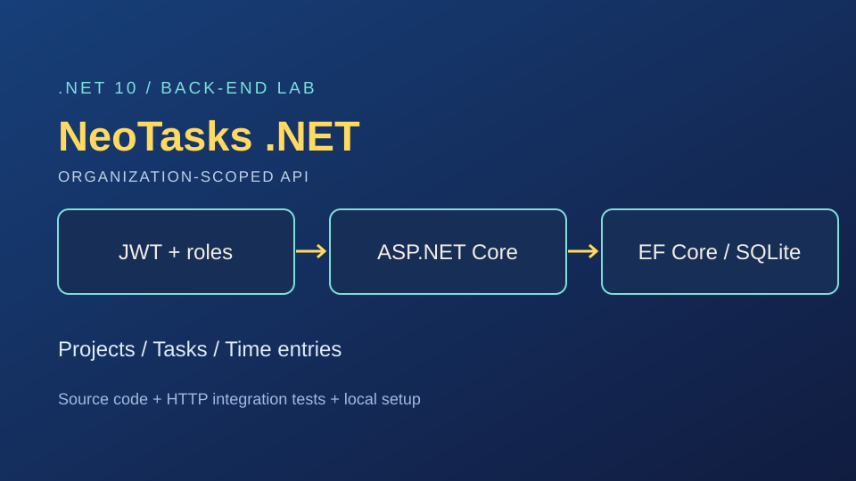
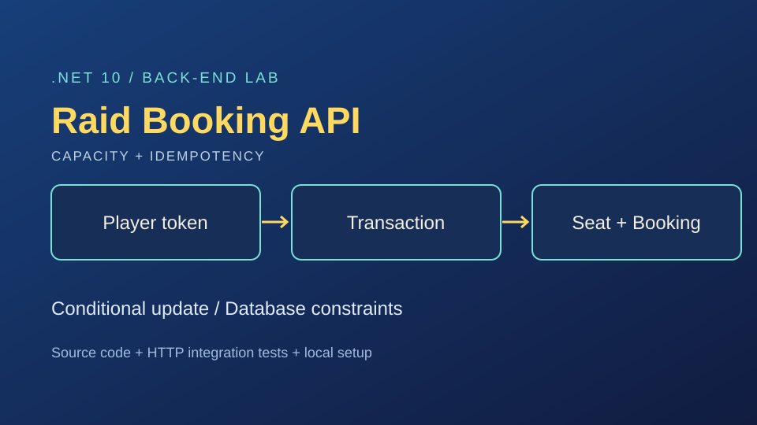
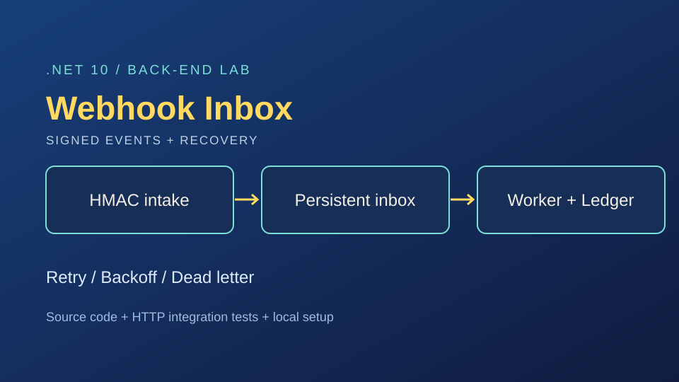

Laboratório .NET · execução local
NeoTasks .NET
Organizações, projetos, tarefas e horas com JWT e isolamento de dados.
Código e documentação ↗LUCIANO DOS SANTOS BUENO · CURITIBA, BRASIL
APIs, persistência de dados e integrações. Minha experiência full stack conecta o back-end ao produto; meu foco atual é aprofundar a engenharia com C# e .NET.
Isolamento entre organizações e regras de acesso no NeoTasks .NET.
02 / CONCURRENCYReserva da última vaga e repetição segura de requisições no Raid Booking.
03 / INTEGRATIONSAssinatura HMAC, deduplicação e tentativas no Webhook Inbox.
TRABALHOS SELECIONADOS
Conheça o problema, as decisões técnicas e as evidências de cada projeto. Os novos laboratórios .NET têm código, testes e instruções para execução local.

Organizações, projetos, tarefas e horas com JWT e isolamento de dados.
Código e documentação ↗
Reservas com capacidade limitada, transações e idempotência.
Código e documentação ↗
Eventos assinados, deduplicação e processamento persistente.
Código e documentação ↗Os laboratórios são projetos de demonstração. Sua documentação descreve o escopo implementado e as evoluções necessárias para uso em produção.
Quer ver mais? Explore todos os repositórios no GitHub ↗
SIDE QUESTS
Projetos que exploram interfaces, ferramentas e meu interesse por jogos de RPG eletrônico.
TRAJETÓRIA & DIREÇÃO
Meu foco atual é C# e .NET, APIs REST e integração de dados. A trajetória em desenvolvimento full stack, suporte técnico e DevOps amplia minha visão sobre o ciclo de uma aplicação.
Também construo com Node.js, Python, React, Next.js, TypeScript e React Native. Docker, Kubernetes e AWS fazem parte dos meus estudos e da minha prática em infraestrutura.
Desenvolvimento de aplicações web com Vue.js, Nuxt, C# e .NET.
FAE Centro Universitário · São José dos Pinhais
2016–2018PRÓXIMA MISSÃO
Para oportunidades em desenvolvimento C# / .NET, meu código e estudos de caso estão disponíveis acima. Entre em contato por e-mail ou pelo LinkedIn.